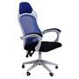
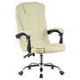

Cadeiras
-

R$ 175,00
ou 12x de R$ 18,07 com juros Cartão Amex - VindiCadeira de escritorio iso Turim plastica amarela home office chair
Comprar -

R$ 386,32 no Pix (12% de desconto)
ou R$ 439,00 em 3x de R$ 146,33 sem jurosCadeira de Escritório Presidente com Rodinha Fortt Trento Azul
Comprar -

Pousada Triuno
Muito conforto e infraestrutura na área rural, com atendimento atencioso e suporte para a pesca esportiva.
Conhecer -

Lago Taboca
Criado para a irrigação do Projeto Rio Formoso, tornou-se ponto famoso para a pesca de tucunaré, pirarucu, pintado, aruanã, etc.
Conhecer -

Praia Recanto da Ilha
As margens do Rio Javaés que tem ao fundo a Ilha do Bananal, a maior ilha fluvial do mundo, e o melhor sem pagar nada por isso. Oferecendo as famílias o melhor custo benefícios no Sul, não há travessia e o estacionamento prático e seguro.
Conhecer -

Fundação Bradesco - Escola de Canuanã
A Escola-fazenda de Canuanã traz experiências diferenciadas para os alunos: moradas com áreas de descanso, convívio e lazer, atividades ao ar livre, salas modernas e o curso Técnico de Agropecuária.
Conhecer -

Aldeia Canuanã
Aldeia mãe do povo Javaé.
Conhecer -

Lagoa do Morro Azul
Lagoa do Morro Azul, um manancial de águas termais surgidas da fenda de um bloco de rocha calcária, numa abundância impressionante, que de imediato vai dando formação a uma bela e cristalina piscina natural.
Conhecer -

Casa de Pedra e o Morro Azul
Nas proximidades encontra-se a Casa de Pedra e o Morro Azul de onde é extraído calcário, usado na agricultura para a correção do solo, cal, brita, granitina.
Conhecer